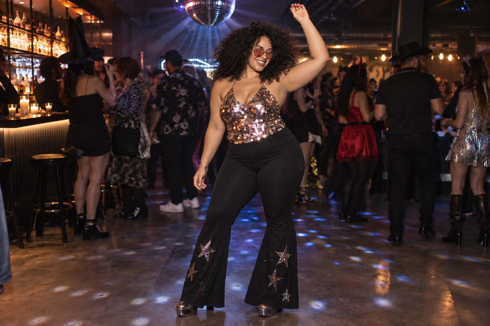

AFTER DARK / The details
Midnight disco
Let the top be the main event. Keep trousers and accessories understated so the shimmer has somewhere to go.
Build this look
Portfolio shopping guide: Etsy links are non-affiliate examples. No partnerships or commissions. AI-generated imagery illustrates styling, not the linked products.
Your three-piece outfit
- Choose a sequin or metallic top.
- Pair it with black flares, trousers or a flowing skirt.
- Add tinted glasses and your favorite dancing shoes.
Make it your own
This is also a good place to think beyond October. Pick a cut you like enough to wear to a concert, a birthday, or a night out. Look closely at the lining, measurements, and how the fabric sits against your skin. Shop by your measurements and look for a size range that includes you. The goal is an outfit that looks ready for the dance floor and lets you stay there.
The styling shortcut: one sparkling piece looks more intentional than five competing ones.